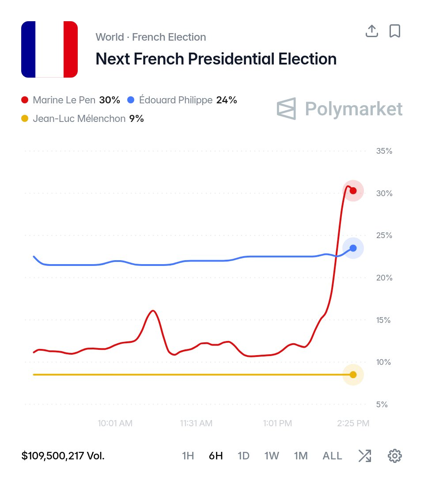

𝐀𝐬𝐡𝐥𝐞𝐲 𝐁𝐥𝐨𝐜𝐤🍥🌹🇹🇼🏳️⚧️🇪🇺
@bolckAshley
@Clemence_Guette 叫你們的那個糟老頭 @JLMelenchon 趕緊退休！
根本贏不了的玩意也跑來選舉了😹

Polymarket
@Polymarket
BREAKING: National Rally leader Marine Le Pen officially announces she will run for president of France in 2027.
She's now favored to win the election. https://t.co/iYKBuV3aJE
Clémence Guetté
@Clemence_Guette
Marine Le Pen est candidate à l'élection présidentielle.
Elle est condamnée car elle a volé les Français.
Nous la battrons dans les urnes. Elle, et le pantin Bardella. Au premier ou au second tour. Rejoignez-nous : la grande bataille a commencé.
https://t.co/hkgtqKKOX0